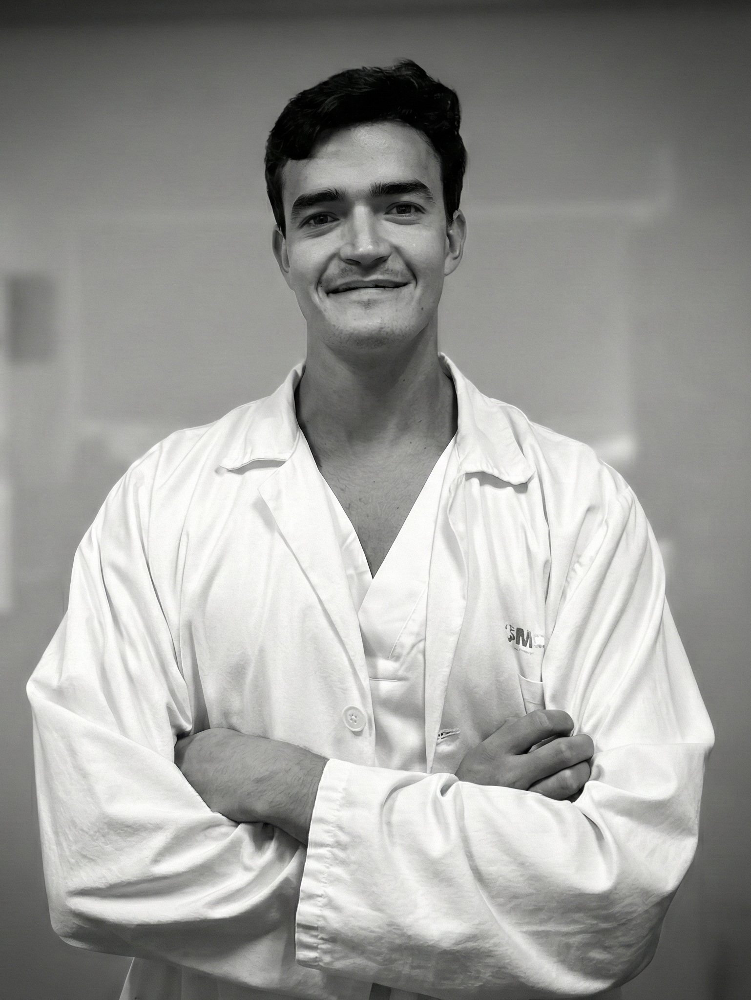

Obesidad y metabolismo
Evaluación integral del paciente con obesidad, valoración metabólica y abordaje individualizado.
Médico especialista en Endocrinología y Nutrición, con especial interés en el abordaje de la obesidad, diabetes, patología tiroidea y nutrición clínica. Una medicina basada en la evidencia, rigurosa y cercana, centrada en comprender a cada paciente.

Formación especializada en el Hospital Universitario Puerta de Hierro Majadahonda.
Mi formación clínica abarca las principales áreas de la Endocrinología y Nutrición, con experiencia específica en tecnología aplicada a la diabetes, ecografía tiroidea y soporte nutricional.
Evaluación integral del paciente con obesidad, valoración metabólica y abordaje individualizado.
Manejo de diabetes y experiencia con sistemas de monitorización continua de glucosa y bombas de insulina.
Estudio de patología tiroidea, realización e interpretación de ecografía y experiencia en punción aspiración ecoguiada.
Experiencia en soporte nutricional hospitalario, tanto enteral como parenteral.
Evaluación de patología hipofisaria y suprarrenal e interpretación de pruebas dinámicas endocrinas.
Valoración global de trastornos hormonales desde un enfoque clínico, individualizado y basado en la evidencia.
Hospital Universitario Puerta de Hierro Majadahonda · 2022–2026
Universidad de Murcia · 2015–2021
Università degli Studi di Siena · Italia · 2017–2018
Universidad Católica San Antonio de Murcia · UCAM
Universitat Oberta de Catalunya · UOC
Inglés B2 · Italiano B2
Participación en publicaciones y comunicaciones científicas relacionadas con la endocrinología, la diabetes, la obesidad y los tumores neuroendocrinos.
Estudio retrospectivo multicéntrico sobre el uso de agonistas del receptor GLP-1 en pacientes con diabetes tipo 2 y/o obesidad y síndrome de Cushing.
Consultar publicación ↗Serie clínica y experiencia en práctica real en pacientes con tumores neuroendocrinos.
Consultar publicación ↗Francisco Javier Albacete Zapata y Natalia Díaz Fernández. Editorial Profármaco-2. ISBN 978-84-18836-12-1.
Puedes acceder directamente a través de los enlaces disponibles en las plataformas profesionales.